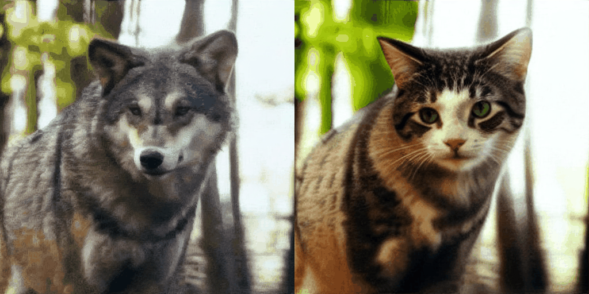
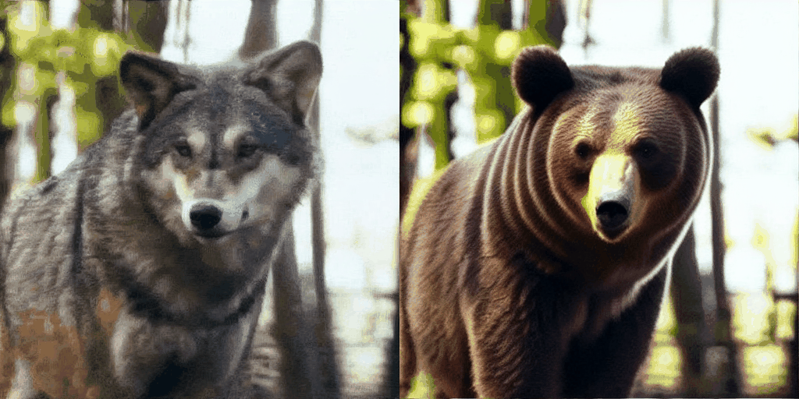
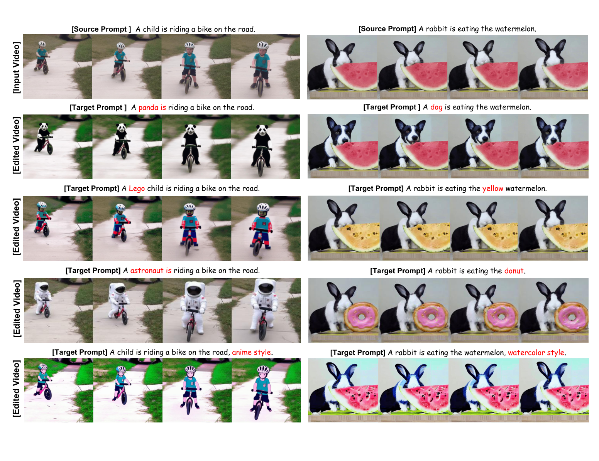
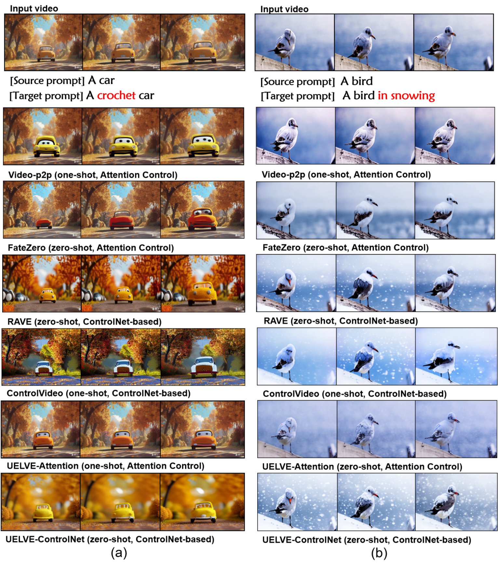

Left: source video · Right: editing result by UELVE
Text-guided video editing aims to transform a source video according to a target text prompt while preserving desired visual content and temporal coherence. Despite recent progress, existing approaches often target specific editing scenarios (e.g., zero-shot or one-shot, local or global editing), struggle to process long videos due to memory and computational constraints. In this paper, we propose UELVE, an Large Language Model-driven Unified framework for Efficient Long-Video Editing based on pre-trained text-to-image diffusion models. UELVE first exploits the reasoning capability of an LLM to automatically analyze the source and target prompts, enabling adaptive decisions on editing strategies. To support long-form video editing, we organize video frames into grids and perform sequential grid-based diffusion, where grid self-attention explicitly ensures short-term consistency among neighboring frames. Furthermore, a simple yet effective grid sliding mechanism is introduced to establish inter-grid interactions, maintaining long-term temporal consistency. In addition, UELVE naturally supports multi-GPU parallel inference with only minimal inter-GPU communication, substantially improving editing efficiency. Extensive experiments on a wide range of video editing scenarios demonstrate that UELVE consistently achieves superior editing quality, strong temporal consistency, and significantly improved efficiency compared with state-of-the-art methods.


【演示视频占位:有视频后取消上面 YouTube 或 Bilibili 的注释】
@article{liu2026uelve,
author = {Liu, Deyin and He, Li and Li, Zhan and Liang, Chengwu},
title = {LLM-Driven Unified Framework with Grid Diffusion for Efficient Long Video Editing},
journal = {arXiv preprint arXiv:XXXX.XXXXX},
year = {2026},
}